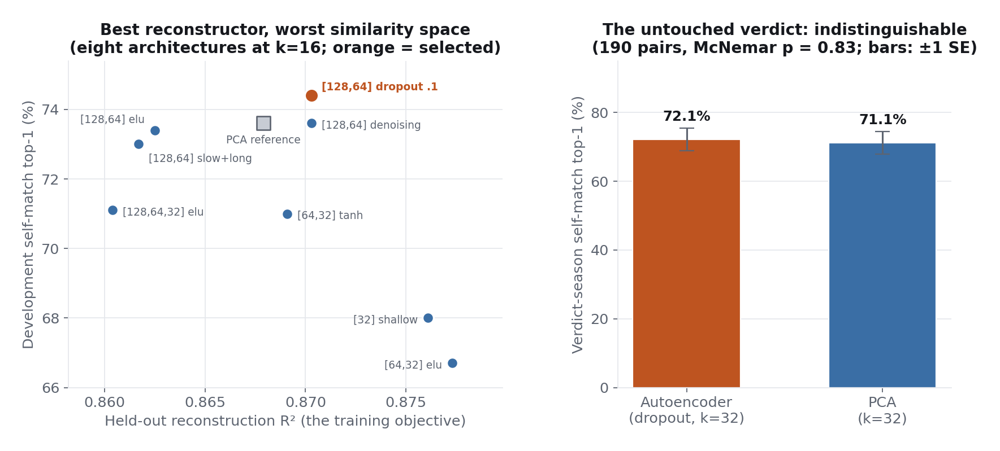

Player Style Embeddings
Role labels cannot answer the scouting question "who plays like this player." This study compresses 81 tracking features into a continuous style space and makes the neural network earn its place against PCA, with the similarity pairs split in time so no tuning decision ever touches the season that renders the verdict.
Does a neural network beat PCA for player similarity?
Not measurably, and the honest search is the real finding. On 190 untouched verdict pairs from the final season, the tuned autoencoder matches a player to his own next season 72.1 percent of the time against PCA's 71.1, indistinguishable within uncertainty (paired test p = 0.83). The search that got there demonstrated something more useful: the architecture that reconstructed the data best produced the worst similarity space of the eight tested, and dropout regularization, which sacrifices reconstruction, gained nearly eight points of similarity accuracy.
All 1,350 player-seasons of 1,000-plus minutes, described by 81 style features chosen to capture how a player plays rather than how well, with algebraically dependent pairs removed so no model gets free reconstruction wins. Candidates are graded on three criteria, held-out-season reconstruction, recovery of known role structure, and a label-free test of whether a player lands nearest his own following season, with the third criterion's pairs split 610 for development and 190 for a single untouched verdict evaluation. Determinism is engineered in: seeds fixed everywhere, TensorFlow's deterministic ops enabled, so repeated runs return identical numbers.
The 81 features are genuinely low-dimensional: about 24 components carry 90 percent of the variance, because drives, drive attempts, drive free throws, and paint touches are four measurements of one behavior. The default autoencoder beats PCA on reconstruction at all five bottlenecks tested and loses to it on both representation tests, the diagnostic that motivated the architecture search. The final space is stable, pairwise distances repeat at 0.941 Spearman across five initializations, and it passes the check no metric replaces: a low-usage defensive guard's nearest neighbors are exactly the low-usage, high-activity defenders a front office would shortlist, none of them stars, none groupable by box score.
The embedding ships as a database table of 32 coordinates per player-season, so similarity search is a distance computation in SQL with no framework dependency. Distance from the league centroid falls out of the same geometry as a distinctiveness measure, and the per-feature audit tells a user exactly what the space blurs: rare, teammate-dependent events like screen assists and box-outs, with nothing reconstructing below 0.877.

Three searches from the deployed space, exactly as the study printed them. A player's own other seasons dominating his neighbour list is the label-free validity test passing in miniature; the non-self matches are the scouting payoff.
- Alex Caruso 2023-24
- Jalen Suggs, De'Anthony Melton, Alex Caruso 22-23, Keon Ellis, Cody Martin: the low-usage, high-activity perimeter defenders a front office would actually shortlist, none of them stars, none groupable by box score.
- Nikola Jokić 2024-25
- His own four other seasons first, then Domantas Sabonis: the space recognizes the league's most unusual profile as most similar to itself, then finds the one stylistic relative.
- Tyler Herro 2025-26
- Tyler Herro 23-24, Cole Anthony, Anfernee Simons, Malik Monk, CJ McCollum: a coherent family of pull-up shot creators.
Run any player-season yourself in the similarity explorer.
Run the similarity search yourself
Pick any player-season and the twelve nearest player-seasons in the deployed 32-dimensional space appear, with role labels attached. Distance measures how a player plays, not how well, and the verdict above applies: read matches as style comparables, not a proprietary edge.
The review found the original comparison circular: the architecture had been selected on the same 800 similarity pairs later used to declare the network superior. The remediation built the temporal firewall, development pairs for every selection decision, one untouched season for the verdict, and the verdict changed the conclusion from superiority to statistical indistinguishability. The finding that survived is the methodological one: reconstruction error, the objective autoencoders are trained on, selected the worst similarity space of the eight candidates, a result that stands on development evidence by design.
The verdict set is one season of 190 pairs, powered to detect differences of roughly seven points, not one, so the tie is a bounded statement rather than proof of equivalence. The role-recovery test is structurally biased toward PCA because the labels came from a linear method, which is why it was demoted from deciding criterion to supporting evidence. Style is defined by what the league tracks: gravity, screening quality, and communication are invisible.
Technical deep dive
Technical highlights
- Three-criterion evaluation with the deciding criterion chosen before results: the deliverable is similarity search, so the label-free self-match test governs, with reconstruction as a floor.
- A temporal selection firewall: architecture and bottleneck width chosen on 610 development pairs, the 190-pair verdict season evaluated exactly once, with a paired McNemar comparison.
- Bit-level reproducibility for a neural pipeline: fixed seeds plus deterministic ops, with a seeded rebuild guard around training that preserves identical results across framework hiccups.
- Per-feature reconstruction audit at the deployed width, so a scout knows the space is excellent on creation and scoring patterns and rougher on connective play.
Key decisions
- Why deploy the autoencoder if the verdict is a tie?
- The clean selection procedure chose it, its development evidence was consistently positive, and the two geometries agree at 0.94 anyway. The page and the study both say PCA would serve equally well; the claim shipped is competitive, not superior.
- Why does the best reconstructor make the worst similarity space?
- An unregularized autoencoder is rewarded for memorizing season-specific noise, and noise is exactly what does not carry to the next season. Dropout forces it to keep only structure robust enough to survive perturbation, which costs reconstruction and buys similarity.
Technology stack
Built on five seasons (2021-22 through 2025-26) of NBA Stats dashboard data compiled into a local SQLite database of 97 tables. All six research studies run against the same database. Every number quoted is generated by the notebook's own executed code, deterministically seeded, and re-verified from a clean environment. Notebooks available by email.